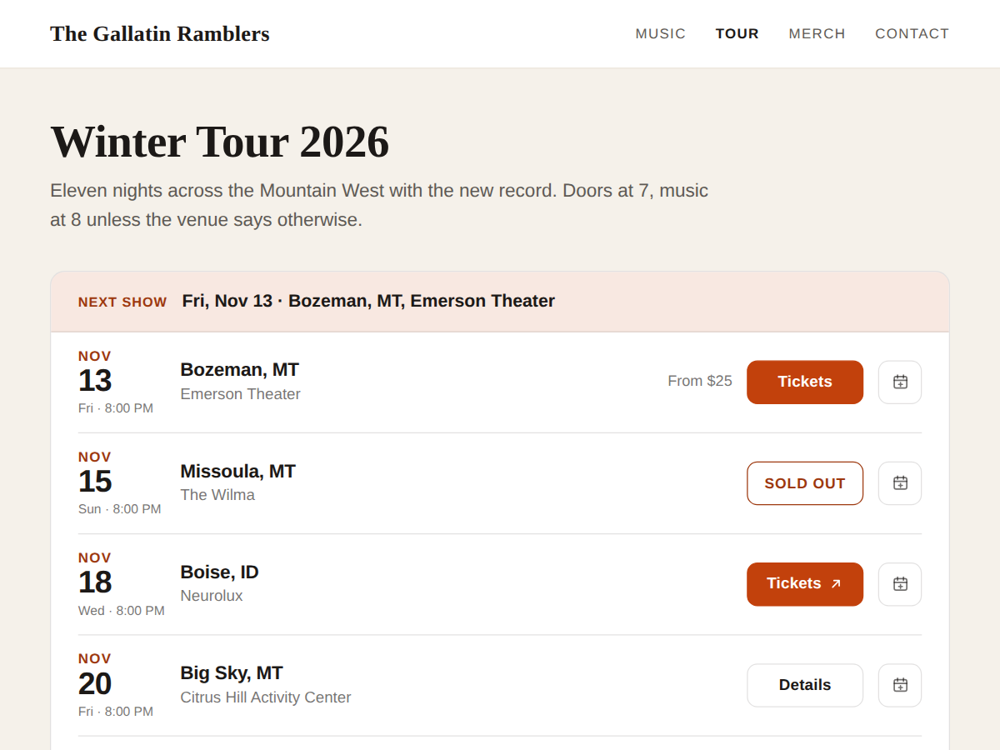

Tour Dates: Shows & Tickets
Tour dates for bands: shows, tickets, sold out
- Your shows from Events, one row per date
- Tickets, RSVP or a Ticketmaster or venue link
- Sold out, canceled and on sale soon labels
- Past shows archive by year (Premium)

What it does
Most band sites keep their tour dates as typed text. Then a show sells out, a date moves, and last spring's shows are still up in November. Tour Dates builds the list from your Events instead, one row per show, so the page keeps itself right.
Each row shows the date, the city with its state ("Bozeman, MT"), the venue and one button. Ticketed shows get a Tickets button with the lowest price, free shows get RSVP, and shows sold through Ticketmaster, Eventbrite, Etix or the venue's own site send fans straight to that link. Sold out, canceled and on sale soon shows say so on their row. A private gig can show "Private" or nothing at all.
A show you add in Events appears on the page by itself, and a show that has passed leaves the list.
Premium keeps your past shows in an archive with a tab per year, adds a "Next show" line on top and an add to calendar button on each row. It can also list only one category, so your tour dates stay apart from workshops or lessons, and it has a compact layout for the home page.
The design follows your site: pick the accent and text colours, the card background and the font in the settings. Dates use each show's own time zone. The app stores no data.
Price
Free
- Next 10 shows as a tour table
- Tickets, RSVP and outside links
- Sold out and canceled labels
- Small credit link
Premium
$4/month, yearly 20% off
- Past shows archive by year
- Next show line and add to calendar
- Category filter and compact layout
- Remove the credit link
- Everything in Premium
- Filter buttons by tour or act
- A Notify me link on sold-out shows
- Show notes under each show